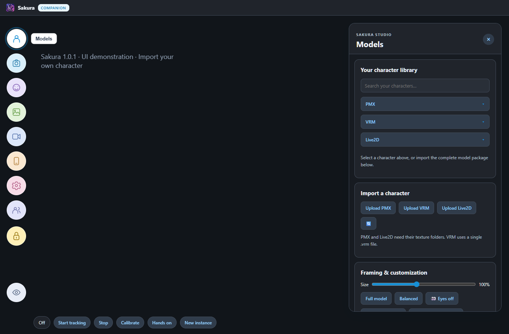
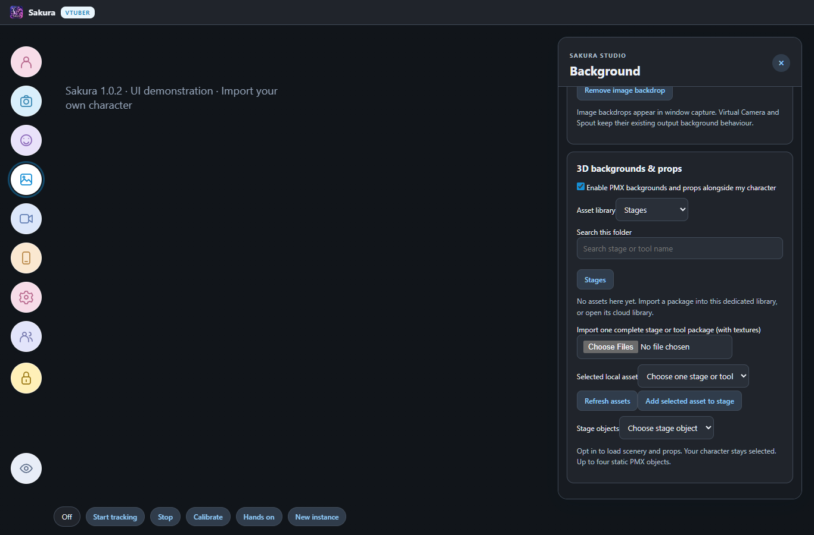
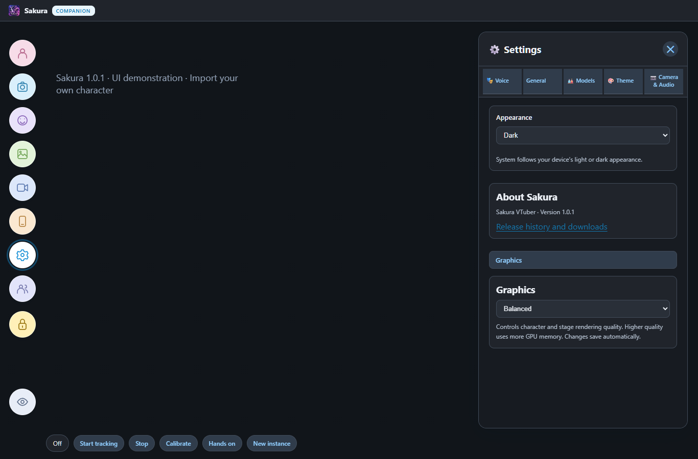

Face, head, arms, fingers and streaming output. A separate, practical guide for this edition. Updated 28 October 2026 / Version 1.0.1; button names are checked against this app snapshot.
Open Sakura VTuber.exe, then click Models (person icon) to import/load an avatar.
Choose the camera and basic MediaPipe face source.
Start tracking and calibrate your neutral face.
Enable hands if wanted, then test your recording/output. No chat LLM is needed.
You need a rigged character and a webcam or paired Sakura Mobile. Chat AI/API keys are not required. OBS, NVIDIA SDK files, Leap Motion and internet Collab services are optional.
If using an installer, install the matching edition first and keep its application folder together. Use the current APK for phone features. Features and labels can vary between builds; do not use a screenshot from an older guide as proof of setup.
1. Start VTuber and load an avatar
Use standalone VTuber for performance without loading a chat LLM.
Install the standalone VTuber EXE, then open Sakura VTuber.exe. The badge shows VTuber. Camera tracking needs no AI API key or LLM download.
Click the person icon labelled Models. Use Upload PMX for the complete folder and textures, Upload VRM for a .vrm file, or Upload Live2D for the complete folder.
Wait for loading to finish. Search your characters by name, or use the separate PMX, VRM and Live2D selectors. Searching characters does not download AI weights.
In Framing & customization use Size, Full model / Portrait view and Customize model. Drag the visible character to position it, right-drag a 3D model to rotate it, and scroll to zoom. Empty stage does not move the model.
Click the camera icon labelled Camera & tracking. Start with Webcam - MediaPipe face tracking and your normal camera before adding optional sources.
Companion includes this tracking workflow through its bottom VTuber mode button. Use Companion mode / Return to assistant there to resume chat. Standalone VTuber stays a dedicated performance app.
How to tell it worked The avatar is visible and Camera & tracking is available without AI-provider setup.
Not every model has moving eyes, fingers or cheek-puff parameters. The creator's rig determines available motion.
2. Find your way around the new UI
The left toolbar opens tall tool panels on the right; the avatar stays on the stage.

Actual UI components shown with demonstration data and no personal avatar.
Hover an icon to see its name. From top to bottom: Models, Camera & tracking, Expressions & hotkeys, Background, Streaming & voice, Sakura Mobile, Settings and Collab.
The large lock below the main tools locks the model position. The small lock below it locks stage items. Unlock the relevant control before dragging.
Use the bottom strip for Start tracking, Stop, Calibrate and Hands on/off. These are shortcuts to the tracking panel. New instance opens another VTuber window; up to three are supported.
The eye icon near the bottom hides the controls for capture. Show controls appears below the title bar; Ctrl+Shift+H also restores them.
In Settings > Theme choose Light, Dark or System. Background changes the stage separately and includes Transparent stage, which toggles on and off.
How to tell it worked Each toolbar icon opens the expected panel and hidden controls can be restored without restarting.
Each VTuber instance has its own window/profile and output settings. Give simultaneous Spout senders distinct names.
3. Set up normal webcam face tracking
Get a stable baseline before changing advanced inputs or smoothing.
Connect the webcam. Close apps holding exclusive camera access if Sakura cannot open it.
Open VTuber and choose the intended Camera. If missing, use Settings > Camera & Audio > Refresh cameras.
Choose Webcam - MediaPipe face tracking under Face tracking source. Choose MediaPipe under Hand and arm tracking backend for the simplest baseline.
Click Start tracking. Sit upright with your face well lit, fully in view and looking toward the camera.
Click Calibrate neutral face. Slowly turn left/right, nod, blink and open your mouth to test each motion.
Set Mirror movement to the direction you prefer. Keep it consistent while tuning to avoid confusing reversed motion.
Click Stop tracking when finished. To change physical camera, select it and start tracking again.
How to tell it worked Status reports fresh frames, your head/face drive the character, and the avatar settles when no person is detected.
Recalibrate after changing camera position or seating. Avoid backlighting, strong lens reflections and face-like images in the background.
If the face sticks or moves with nobody in view, stop/restart, simplify the background and retest the basic camera feed before changing models.
4. Enable arms and fingers separately
Add hand input without turning normal head/lean/up-down tracking into a hand-only feature.
Confirm normal face tracking works. In the VTuber panel, click Hand tracking so the button reads On.
Keep wrists and hands inside the camera frame. For arms, include shoulders and elbows where possible. Separate fingers for the first test.
Test one open palm, then curl its fingers slowly. Test the other hand. Crossed hands, overlapping fingers and rapid occlusion are harder to track.
Toggle Hand tracking Off: hand-driven arms/fingers should stop while ordinary face/head and body motion remain available.
In Settings > Camera & Audio, adjust Hand movement range if the avatar's hands sit too near its face. Change one setting at a time.
For Leap Motion, select its hand backend, connect the hardware and start the compatible Ultraleap service. Keep a camera for face/head input.
For NVIDIA GPU hand tracking, select that backend on a compatible GPU/browser setup. This uses GPU-accelerated MediaPipe, not the RTX facial SDK.
How to tell it worked The Hand tracking button independently controls arms/fingers, and visible fingers drive corresponding model motion.
For Sakura Mobile, the phone supplies its own measurements. Choosing a desktop Leap Motion/GPU backend does not install that detector on the phone.
Detection cannot create missing avatar finger bones. Different model proportions and bone mappings can also limit hand placement.
5. Use Sakura Mobile as the camera
Pair to this VTuber edition, then control tracking from the PC.
Install the current Sakura Mobile APK. Connect PC and phone to the same trusted Wi-Fi.
Click the Sakura Mobile phone icon on the PC and enable phone connection on home Wi-Fi. On Sakura Mobile open Connect to PC, tap the discovered PC/edition name and enter the six-digit pairing code. You do not type an http:// address for normal pairing.
Standalone VTuber normally uses port 8772; Companion normally uses 8771. A remembered Companion connection does not automatically connect to standalone VTuber.
Check Existing devices on the PC. The phone must say Connected, not only Remembered. If discovery fails, refresh it and check both devices are on the same trusted Wi-Fi. Remembered pairings follow the PC identity when its address changes.
Choose front or rear camera on the phone. Select Sakura Mobile as Camera on the PC and click Start tracking. Keep the phone app open on its tracking screen.
Calibrate in your neutral position. Turn Hand tracking on/off on the PC according to whether you want arms/fingers.
To change facing, use the phone's front/rear selector and check that tracking resumes. Stop tracking when finished or before backgrounding the app.
How to tell it worked The PC camera selector says Sakura Mobile and status shows fresh received FPS.
Advanced connection troubleshooting is a fallback when network discovery is blocked. Initial secure pairing may ask you to compare the PC certificate fingerprint. The normal workflow uses the PC name and code, not an address. Do not forward router ports for ordinary LAN pairing.
Zero end-to-end latency is not possible: camera exposure, inference, Wi-Fi and rendering all take time. Check measured frames, not just the target FPS.
If motion becomes stale, check phone foreground state and network first. More smoothing adds delay. Camo is an alternative Windows webcam feed; select Camo as the camera when using that separate app.
6. Tune head movement, lean and smoothness
Aim for controlled motion rather than maximum sensitivity.
Start with default settings and recalibrate. Keep face, neck and shoulders visible.
Test a small turn, nod, shoulder lean left/right and small whole-body rise/lower. In 3D these should drive bounded motion rather than elongate the torso.
In Settings > Camera & Audio, increase Movement smoothing slightly for jitter. Reduce it slightly if tracking feels delayed.
Adjust Head movement range if turns are too small or exaggerated. Use Hand movement range only for arms/hands.
Start Tracking frame rate at 30 FPS. Try 60 only if the camera/machine sustain it. Read measured FPS: choosing 60 does not force 60 successful inferences each second.
Tune Blink sensitivity, Link left and right blinks, Gaze strength and Glasses-friendly eye tracking as needed. Recalibrate with eyes open and minimal glare.
If tuning made it worse, click Reset tracking settings and retest the same slow motions.
How to tell it worked Motion follows you without big jumps, stretched torsos or a long catch-up movement. Measured FPS is reasonably steady.
PMX, VRM and Live2D rigs differ; the same tracking data can look different. A model needs suitable physics and un-frozen bones for secondary/jiggle motion.
Heavy hair physics, high render quality, low light and other GPU workloads affect smoothness. Try Balanced/Low avatar quality before maxing every tracking option.
Cursor following is separate from camera tracking. Models > Framing & customization > Eyes on/off controls it. The release fixes expensive 3D hover picking; actual render FPS still depends on the model and hardware.
7. Choose an optional NVIDIA face tracker
A virtual webcam effect and a facial-expression engine are different things.
For an enhanced camera image, configure NVIDIA Broadcast separately, choose its real camera there and select Camera (NVIDIA Broadcast) in Sakura. Test that feed first.
For native RTX expressions, open Settings > Camera & Audio > Optional NVIDIA AR SDK facial expressions setup. Use Download optional NVIDIA SDK, or Import downloaded SDK ZIP for an existing download.
Use your own NVIDIA account/access when requested. SDK Core plus Face Expressions, Face Landmark Detection and Face Box Detection packages are needed for the supported setup.
Browse to the extracted ARSDK folder and click Save folder and check SDK. Read missing-component errors; a folder existing does not prove all features are installed.
Choose NVIDIA AR SDK - Sakura native RTX tracker, or click Enable Sakura native RTX tracker. Keep your intended camera/Sakura Mobile feed selected and start tracking.
Verify fresh expression results. If setup fails, return to Webcam - MediaPipe and confirm normal tracking still works.
For the separate 2 GB ExpressionApp option, install the VTube Studio NVIDIA tracker DLC through Steam, select its MXTracker/v2 folder and camera index, and click Save and check before enabling it.
How to tell it worked The selected engine reports fresh expression data, not merely that a process launched or DLL files exist.
Use the native AR SDK frame-input path for Sakura Mobile RTX expressions. ExpressionApp normally opens its own Windows camera instead of accepting direct phone JPEG input.
The Steam DLC and native SDK are separate packages. Sakura does not redistribute the DLC or provide a Steam-free copy. The SDK requires a supported RTX setup and its own feature files.
NVIDIA Broadcast alone does not add cheek puff. The detector must output it and the avatar must have an appropriate expression/morph.
8. Expressions, mouth input and VBridger
Match input data to what your avatar actually supports.
Open Model Settings > Expressions. Enable Auto expressions from camera if wanted, then preview the model's available expressions.
For Live2D, inspect face mappings. Use Detect matching parameters again if needed, then Cheek-puff preview to see whether that model can visibly puff its cheeks.
Open Model Settings > Mouth and select Webcam tracking, Microphone lip sync, Camera + microphone, Speech / voice changer playback, or Off.
For microphone lip sync, choose/start the mic, then tune Sensitivity, Silence cutoff and Smoothing. Try Simple first; Frequency based estimates mouth shapes from audio.
Stop the mouth microphone after use. It is separate from AI chat/wake listening and does not mean chat AI is running.
For VBridger, configure its VMC blendshape output to 127.0.0.1:39539 and select the matching source in Sakura. Keep camera tracking for head pose.
For VTube Studio > VBridger RTX, configure those external apps first, select that source in Sakura and check incoming data. Selecting the name alone is not a connection.
How to tell it worked Expression previews are visible, the chosen mouth source works, and any external face source reports real received data.
External apps/hardware are separate downloads or purchases where applicable. Selecting a backend does not install them.
If eyebrows move the wrong way, compare expression previews and mappings. If cheek-puff preview does nothing, investigate the model's parameter range before raising sensitivity.
9. Materials, hair, clothing and secondary motion
Make reversible, targeted changes before editing an entire avatar.
Open Model Settings > Texture remapping to inspect a material and apply a replacement texture. Keep the untouched model assets as a reference.
In Texture coloring, choose the material by name or click Pick part on model, then click the intended area of hair/clothing.
Under What would you like to change?, choose Change color or Change transparency. Apply color changes tint; Apply transparency changes opacity while preserving the original or already-saved tint. Use the matching Restore control to undo that channel.
Under Character lighting, use Pick part for gloss and bloom for a selected area. Use Use full model when you want the effect everywhere.
In Bones, use Freeze this bone only to diagnose unwanted motion. Restore all bones reverses manual freezes; Reset automatic freezes and recheck handles automatic ones.
For a broken skirt, hair or face, take a diagnostic snapshot. Restore local overrides and compare the untouched asset in its editor before assuming the asset is damaged.
Retest normal tracking after each single material or physics change.
How to tell it worked Only the intended material changes and normal movement does not create obvious spikes, clipping or transparency holes.
Negative transparency strengthens opacity. It cannot reliably fix incorrect skin weights, missing geometry, wrong textures or every alpha-sorting issue.
Generic/Japanese material names can be confusing; Pick part on model helps avoid editing a similarly named material. Different rigs need different physics tuning.
In Background > Stage items choose Add item for transparent images or Live2D assets. Select Above model or Below model, adjust size/rotation and enable Attach to model movement and size if wanted. The small lock prevents accidental movement.
10. Output to OBS, Discord or a video app
Pick one output route and verify it in the receiver before going live.
Open Streaming & voice (video-camera icon). In Virtual camera click Install Sakura Virtual Camera if the driver is missing, and approve the Windows installation prompt yourself.
Click Virtual Camera: Off in Sakura to enable it. Choose Sakura Virtual Camera in the receiving video app. Restart that app if the newly installed camera is not listed.
Check the actual preview. This route outputs the character on a dark background without controls; it is not a promise of alpha transparency.
For OBS Spout capture, open Streaming & voice, enable Spout2 output and choose sender name, output size and FPS limit. Read the status for startup errors.
In OBS add the appropriate Spout2 capture source/plugin and select the same sender name. Missing sender: verify Sakura output support and the OBS plugin are available.
Use the transparency/background control when needed. Hide UI with the streaming-controls button; Ctrl+Shift+H restores it.
Record a short local OBS test. Check picture, framing, background, sound routing and sync. Turn unused outputs off afterwards.
How to tell it worked The receiver shows the avatar and a test recording has the intended video and audio.
Spout and Virtual Camera are different routes. Virtual-camera video does not automatically carry Sakura's speech/audio; route audio separately.
Output FPS is not tracking FPS. Spout does not remove camera/inference latency. If capture is black, check sender/source choice, output errors and competing camera ownership.
11. Collab, Chat Reader and quick fixes
Add optional performance features after tracking and output are stable.
For Collab, load an avatar and click the Collab people icon and enter a working secure WSS collab relay address.
The host creates a room code; everyone uses that relay and code, clicks Connect, and waits for participant/model synchronization.
If peers cannot connect across networks, the host may need a suitable TURN server under Advanced. A room code by itself is not an internet relay service.
Only share avatars you are allowed to transfer. Collab can send model packages to peers; that is different from only sending a camera picture.
For Chat Reader, paste a public YouTube livestream/chat link in the tracking/Chat Reader panel, choose Chat Reader voice and volume, then click Chat Reader on.
Check that messages arrive and are spoken. Chat Reader disables face/hand tracking and reads messages; it is not AI conversation or AI VTuber co-hosting. Use Chat Reader off after use.
End the session by stopping tracking, microphone lip sync, Chat Reader, Collab and outputs you enabled. Minimize retains a running session; Quit exits it.
How to tell it worked A collaborator appears after synchronization, or received chat messages are read aloud. Stopped features report off/disconnected.
No model: check completed import and textures. No motion: check Start tracking, selected source/camera, permissions and fresh frames. No hands: turn Hand tracking on, show wrists/fingers and verify phone app version if used.
Missing camera: refresh, test Camo/Broadcast output and close conflicting capture apps. SDK not detected: choose the extracted ARSDK folder with the required features, not the ZIP.
If the window will not restore after minimizing, try its taskbar/tray entry. Report edition/GPU and exact steps instead of repeatedly launching more instances. Remove keys/codes/private content from bug reports.
12. Use microphone voice conversion
Optional microphone playback can drive the avatar's mouth without enabling AI chat.
Select a built-in voice, or upload/select an [RVC] voice under Settings > Voice. For RVC use the .pth model plus its optional matching .index file and Upload & Activate.
Choose your microphone and output device in Settings > Camera & Audio. Use headphones for the first test to reduce feedback.
Enable Voice changer in Camera & Audio. Wait for any RVC loading and check the status before speaking.
Speak a short phrase. With a built-in voice, Sakura transcribes locally and speaks the transcript. With [RVC], the local RVC service converts your microphone audio.
Check that playback is audible and drives the model's mouth. In Model Settings > Mouth, choose the appropriate playback input if needed.
Route this output into OBS or the receiving call app separately from the virtual-camera video. Record a short test to check delay and feedback.
Turn Voice changer off after use, then stop any independent microphone lip-sync capture you enabled.
How to tell it worked Your test phrase plays through the intended voice/output, and turning the feature off stops that microphone-conversion session.
Transcription followed by synthesized speech is not the same as direct RVC conversion and can have more delay. Neither path provides zero latency.
If the RVC service/model fails, test a built-in voice first. This feature is separate from Companion's chat mic and wake listener.
13. Cloud character library and account access
Download characters with your Sakura account, independently of the library owner's storage accounts.
Open Models and choose Cloud import PMX, Cloud import VRM or Cloud import Live2D.
Sign in or create a Sakura account, complete email verification when requested, then refresh the library. Use Forgot password if needed.
Browse the category folders or search by character name. Select a character card to inspect the preview and download it.
Wait for completion and load the character from its matching local PMX, VRM or Live2D selector.
How to tell it worked The character loads locally with its textures and works with normal tracking.
Users do not need Jio accounts, owner OTPs or publishing credentials. Cloud library availability depends on published packages, internet access and the account service.
14. PMX backgrounds, tools and props
Place a PMX environment or accessory beside your 3D character.

Actual UI components shown with demonstration data and no personal avatar.
Open Background on the left toolbar. Scroll to 3D backgrounds & props.
Tick Enable PMX backgrounds and props alongside my character. With this off, saved scenery is not loaded.
Import the complete PMX scenery/prop folder including textures. Select the imported asset, then click Add selected asset to stage. The same picker can use already imported Tools & Props assets.
Select a stage object and set Position X/Y/Z, Scale and Rotation Y. Move distant scenery along Z and adjust its size to fit the camera. Up to four static PMX objects can share the scene.
Untick the checkbox to unload scenery. Use Remove selected object to forget one placement; it does not delete the imported asset.
How to tell it worked Background and tools render with the PMX/VRM character and appear in the same scene captured by Spout or Virtual Camera.
The character remains the tracking target. These static objects do not receive face tracking, humanoid retargeting or character physics. PMX scenery is intended for 3D characters, not the separate Live2D renderer.
15. Installed version and graphics
Check your version and tune rendering cost before increasing tracking complexity.

Actual UI components shown with demonstration data and no personal avatar.
Open Settings > Theme. About Sakura shows the installed version, currently 1.0.1.
Release history and downloads opens the official release page. Install the matching edition when updating.
Click Graphics and select Low, Balanced or High. Changes save automatically and synchronize with the toolbar quality control.
Test your model, scenery and recording together. Use fewer props or lower quality if GPU memory usage is high.
How to tell it worked Settings shows the correct edition/version and the rendering quality follows your selection.
Rendering quality changes resolution/detail budget; it does not guarantee 60 FPS tracking. Camera inference, hardware and phone network conditions also affect smoothness.
To toggle a material change like an expression, pick the part in Texture coloring, choose color or transparency, set its values, name the preset and click Save selected part as expression. Use Expressions > Part color & transparency expressions to switch it on/off. Off restores the previous value for that channel while preserving the other channel. Presets stay separate for each model.